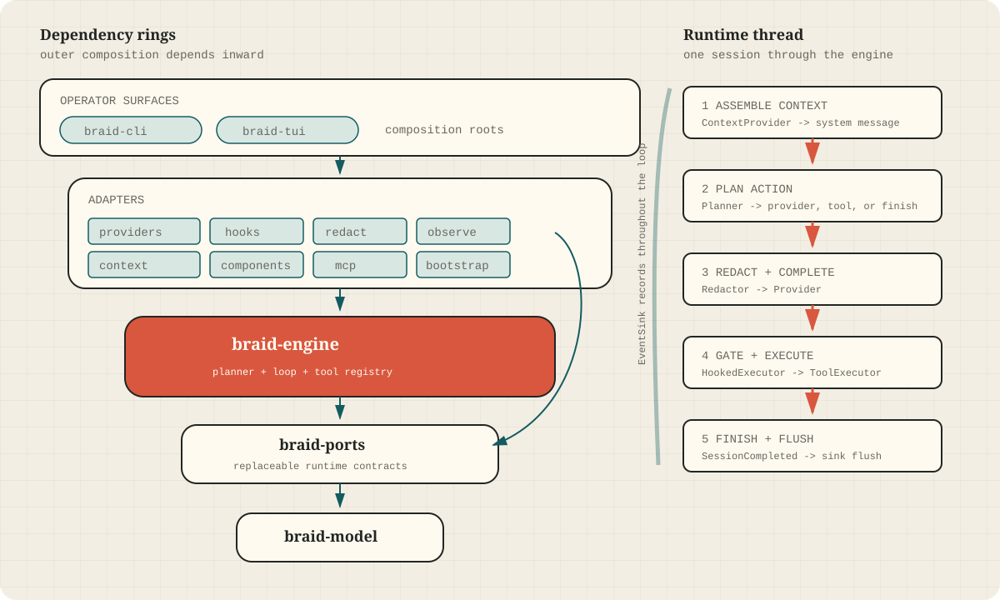

A session and a planner
RunInput carries a session ID, messages, and an optional turn limit.
A planner receives session state and selects the next action.
System map
Domain values point inward. Infrastructure implements ports outside the core. CLI and TUI binaries compose the graph without becoming part of the engine.
braid-model is the leaf. braid-ports defines the contracts.
braid-engine coordinates a session. Outer crates implement providers,
policy, persistence, context, components, protocol exposure, and operator setup.

RunInput carries a session ID, messages, and an optional turn limit.
A planner receives session state and selects the next action.
Provider, tool executor, event sink, redactor, and optional context provider are supplied to the generic engine rather than constructed inside it.
| Hop | Owner | What crosses the boundary |
|---|---|---|
| Context assembly | ContextProvider | A bounded snapshot rendered as a system message |
| Planning | Planner | Current messages, pending calls, turn count, and last response |
| Completion | Provider | Redacted messages in a provider-neutral request |
| Execution | ToolExecutor | A structured tool call and result |
| Observation | EventSink | Session lifecycle and tool/provider events |
The CLI and TUI choose concrete providers, context sources, redaction rules, hooks, tools, and storage. That duplication is visible and currently tracked as an architectural pressure rather than hidden inside the engine.
Canonical messages, content parts, tool calls, provider requests, events, transcripts,
and context snapshots live in braid-model. The port crate then defines the
behavior expected from each replaceable adapter.
Sources: engine.rs, braid-ports, and architecture checks.